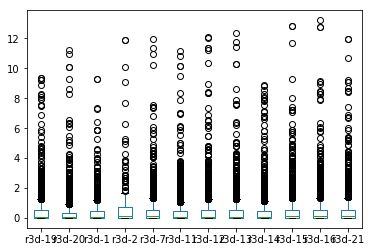

[1]:
%matplotlib inline
import os
import sys
import pandas as pd
import numpy as np
import sqlite3
db_filepath = "C:/Users/Jeff/Google Drive/research/Hampton Roads Data/Time Series/hampt_rd_data.sqlite"
[2]:
def get_db_table_as_df(name, sql="""SELECT * FROM {};""", date_col=None, dbfilename=db_filepath):
con = sqlite3.connect(dbfilename)
sql = sql.format(name)
if name == 'datavalues':
date_col = 'Datetime'
df = pd.read_sql(sql, con, parse_dates=date_col)
if name == 'datavalues':
df = make_date_index(df, 'Datetime')
return df
[3]:
def get_id(typ, data):
"""
gets either the siteid or variableid from the db
:param typ: String. Either "Site" or "Variable"
:param data: Dict. the site or variable data
:return: int. id of site or variable
"""
data_df = pd.DataFrame(data, index=[0])
code_name = '{}Code'.format(typ)
table_name = '{}s'.format(typ.lower())
id_name = '{}ID'.format(typ)
code = data[code_name]
check_by = [code_name]
table = get_db_table_as_df(table_name)
id_row = table[table[code_name] == code]
id_num = id_row[id_name].values[0]
return id_num
[4]:
def make_date_index(df, field, fmt=None):
df.loc[:, field] = pd.to_datetime(df.loc[:, field], format=fmt)
df.set_index(field, drop=True, inplace=True)
return df
[5]:
def get_table_for_variable_code(variable_code, site_id=None, start_date=None, end_date=None):
var_id = get_id('Variable', {'VariableCode': variable_code})
table_name = 'datavalues'
sql = """SELECT * FROM {} WHERE VariableID={};""".format(table_name, var_id)
if start_date or end_date:
if not start_date:
start_date = '1900-01-01'
elif not end_date:
end_date = '2100-01-01'
sql = """SELECT * FROM {} WHERE VariableID={} AND Datetime BETWEEN '{}' AND '{}';""".format(
table_name,
var_id,
start_date,
end_date
)
df = get_db_table_as_df(table_name, sql=sql)
df = df.sort_index()
if site_id:
df = df[df['SiteID'] == site_id]
return df
[6]:
def round_down_near_24(datetimes): # round down the times near midnight so the tide levels stay on the correct day
close_time_idx = datetimes.indexer_between_time('23:29', '23:59')
adjusted_times = datetimes[close_time_idx] - pd.Timedelta(minutes=15)
dt = pd.Series(datetimes)
dt[close_time_idx] = adjusted_times
dt = pd.DatetimeIndex(dt)
return dt
[7]:
def cln_n_rnd_times(df):
for i in range(df.shape[1]):
datetimes = df.iloc[:, i]
times = pd.DatetimeIndex(datetimes)
rnd_dn = round_down_near_24(times)
df.iloc[:, i] = rnd_dn
return df
[8]:
def pivot_dv_df(df):
return df.pivot(columns='SiteID', values='Value')
[9]:
def rename_cols(df, var_abbrev):
if var_abbrev != "":
new_df = df.copy()
cols = df.columns.tolist()
new_cols = ['{}-{}'.format(var_abbrev, c) for c in cols]
new_df.columns = new_cols
return new_df
else:
return df
[10]:
def filter_max_rain_time_dfs(rain_daily_df, time_df):
timemx_filt = pd.DataFrame(np.where(rain_daily_df>0, time_df, np.datetime64('NaT')))
timemx_filt.columns = time_df.columns
timemx_filt.index = time_df.index
return timemx_filt
[11]:
def tide_when_rain_max(rn_mx_time_df):
td_df = get_table_for_variable_code('six_min_tide')
try:
td_df = pivot_dv_df(td_df)
except:
td_df = remove_duplicates(td_df)
td_df = pivot_dv_df(td_df)
td_df = td_df.resample('15T').mean()
rn_mx_time_rnd = cln_n_rnd_times(rn_mx_time_df)
l = []
for c in rn_mx_time_rnd.columns:
times = rn_mx_time_rnd.loc[:, c]
tides = td_df.loc[times].resample('D').max()
rain_var = c.split('_')[0]
rain_site = c.split('-')[-1]
new_cols = ['{}-{}_td-{}'.format(rain_var, rain_site, col) for col in tides.columns]
tides.columns = new_cols
l.append(tides)
new_df = pd.concat(l, axis=1)
new_df.sort_index(inplace=True)
return new_df
[12]:
def remove_duplicates(df):
siteids = df['SiteID'].unique()
df.reset_index(inplace=True)
print df.shape
non_duplicated = list()
for site in siteids:
df_site = df[df['SiteID'] == site]
df_site_vals = df_site['Datetime']
df_no_dups = ~df_site_vals.duplicated()
df_no_dups_idx = df_site[df_no_dups].index
non_duplicated.extend(df_no_dups_idx.tolist())
df = df.loc[non_duplicated]
df.set_index('Datetime', drop=True, inplace=True)
print df.shape
return df
[13]:
def daily_pivot_table(var_code, agg_function, abbreviation):
df = get_table_for_variable_code(var_code)
try:
dfp = pivot_dv_df(df)
except ValueError:
df = remove_duplicates(df)
dfp = pivot_dv_df(df)
dfd = dfp.resample('D')
aggrd = dfd.agg(agg_function)
rnmed = rename_cols(aggrd, abbreviation)
return rnmed
Rainfall¶
[14]:
# get rainfall data at 15 min interval
rain_df = get_table_for_variable_code('rainfall')
Daily Rainfall¶
[15]:
rain_daily15 = daily_pivot_table('rainfall', np.sum, '')
rain_daily = daily_pivot_table('daily_rainfall', np.sum, '')
rain_daily_comb_no_name = pd.concat([rain_daily, rain_daily15], axis=1)
rain_daily_comb_named = rename_cols(rain_daily_comb_no_name, 'rd')
rain_daily_comb_named.head()
[15]:
| rd-19 | rd-20 | rd-1 | rd-2 | rd-7 | rd-11 | rd-12 | rd-13 | rd-14 | rd-15 | rd-16 | rd-21 | |
|---|---|---|---|---|---|---|---|---|---|---|---|---|
| Datetime | ||||||||||||
| 2010-01-01 | 0.01 | 0.01 | NaN | NaN | 0.05 | 0.03 | 0.06 | 0.02 | 0.01 | 0.01 | 0.02 | 0.03 |
| 2010-01-02 | 0.00 | 0.00 | NaN | NaN | 0.00 | 0.01 | 0.00 | 0.00 | 0.00 | 0.00 | 0.00 | 0.00 |
| 2010-01-03 | 0.00 | 0.00 | NaN | NaN | 0.00 | 0.00 | 0.00 | 0.02 | 0.00 | 0.00 | 0.00 | 0.00 |
| 2010-01-04 | 0.00 | 0.00 | NaN | NaN | 0.10 | 0.10 | 0.00 | 0.11 | 0.00 | 0.00 | 0.00 | 0.00 |
| 2010-01-05 | 0.00 | 0.00 | NaN | NaN | 0.00 | 0.00 | 0.00 | 0.00 | 0.12 | 0.00 | 0.00 | 0.11 |
[16]:
rain_daily_comb_named.tail()
[16]:
| rd-19 | rd-20 | rd-1 | rd-2 | rd-7 | rd-11 | rd-12 | rd-13 | rd-14 | rd-15 | rd-16 | rd-21 | |
|---|---|---|---|---|---|---|---|---|---|---|---|---|
| Datetime | ||||||||||||
| 2016-12-28 | 0.00 | 0.00 | 0.00 | NaN | NaN | 0.0 | NaN | 0.00 | 0.00 | 0.00 | 0.0 | 0.00 |
| 2016-12-29 | 0.19 | 0.20 | 0.18 | NaN | NaN | 0.2 | NaN | 0.19 | 0.16 | 0.26 | 0.3 | 0.24 |
| 2016-12-30 | 0.00 | 0.00 | 0.00 | NaN | NaN | 0.0 | NaN | 0.00 | 0.00 | 0.00 | 0.0 | 0.00 |
| 2016-12-31 | 0.00 | 0.00 | 0.00 | NaN | NaN | 0.0 | NaN | 0.00 | 0.00 | 0.00 | 0.0 | 0.00 |
| 2017-01-01 | 0.02 | 0.01 | NaN | NaN | NaN | NaN | NaN | NaN | NaN | NaN | NaN | NaN |
Hourly Rainfall¶
[17]:
rain15 = pivot_dv_df(rain_df)
rain_hourly_totals = rain15.rolling(window='H').sum()
rhr_mx = rain_hourly_totals.resample('D').max()
rhr_mx = rename_cols(rhr_mx, 'rhrmx')
rhr_mx.head()
[17]:
| rhrmx-1 | rhrmx-2 | rhrmx-7 | rhrmx-11 | rhrmx-12 | rhrmx-13 | rhrmx-14 | rhrmx-15 | rhrmx-16 | rhrmx-21 | |
|---|---|---|---|---|---|---|---|---|---|---|
| Datetime | ||||||||||
| 2010-01-01 | NaN | NaN | 0.04 | 0.01 | 0.04 | 0.01 | 0.01 | 0.01 | 0.01 | 0.02 |
| 2010-01-02 | NaN | NaN | 0.00 | 0.01 | 0.00 | 0.00 | 0.00 | 0.00 | 0.00 | 0.00 |
| 2010-01-03 | NaN | NaN | 0.00 | 0.00 | 0.00 | 0.02 | 0.00 | 0.00 | 0.00 | 0.00 |
| 2010-01-04 | NaN | NaN | 0.10 | 0.10 | 0.00 | 0.11 | 0.00 | 0.00 | 0.00 | 0.00 |
| 2010-01-05 | NaN | NaN | 0.00 | 0.00 | 0.00 | 0.00 | 0.12 | 0.00 | 0.00 | 0.11 |
[18]:
rhr_timemx = rain_hourly_totals.groupby(pd.TimeGrouper('D')).idxmax()
rhr_timemx = rename_cols(rhr_timemx, 'rhr_mxtime')
rhr_timemx = filter_max_rain_time_dfs(rain_daily15, rhr_timemx)
rhr_timemx.head()
[18]:
| rhr_mxtime-1 | rhr_mxtime-2 | rhr_mxtime-7 | rhr_mxtime-11 | rhr_mxtime-12 | rhr_mxtime-13 | rhr_mxtime-14 | rhr_mxtime-15 | rhr_mxtime-16 | rhr_mxtime-21 | |
|---|---|---|---|---|---|---|---|---|---|---|
| Datetime | ||||||||||
| 2010-01-01 | NaT | NaT | 2010-01-01 22:45:00 | 2010-01-01 00:15:00 | 2010-01-01 23:00:00 | 2010-01-01 00:45:00 | 2010-01-01 00:15:00 | 2010-01-01 05:00:00 | 2010-01-01 00:45:00 | 2010-01-01 23:00:00 |
| 2010-01-02 | NaT | NaT | NaT | 2010-01-02 13:15:00 | NaT | NaT | NaT | NaT | NaT | NaT |
| 2010-01-03 | NaT | NaT | NaT | NaT | NaT | 2010-01-03 07:00:00 | NaT | NaT | NaT | NaT |
| 2010-01-04 | NaT | NaT | 2010-01-04 13:30:00 | 2010-01-04 13:00:00 | NaT | 2010-01-04 12:45:00 | NaT | NaT | NaT | NaT |
| 2010-01-05 | NaT | NaT | NaT | NaT | NaT | NaT | 2010-01-05 10:15:00 | NaT | NaT | 2010-01-05 10:30:00 |
15-min max rainfall¶
[19]:
r15_mx = rain15.resample('D').max()
r15_mx = rename_cols(r15_mx, 'r15mx')
r15_mx.head()
[19]:
| r15mx-1 | r15mx-2 | r15mx-7 | r15mx-11 | r15mx-12 | r15mx-13 | r15mx-14 | r15mx-15 | r15mx-16 | r15mx-21 | |
|---|---|---|---|---|---|---|---|---|---|---|
| Datetime | ||||||||||
| 2010-01-01 | NaN | NaN | 0.02 | 0.01 | 0.02 | 0.01 | 0.01 | 0.01 | 0.01 | 0.02 |
| 2010-01-02 | NaN | NaN | 0.00 | 0.01 | 0.00 | 0.00 | 0.00 | 0.00 | 0.00 | 0.00 |
| 2010-01-03 | NaN | NaN | 0.00 | 0.00 | 0.00 | 0.02 | 0.00 | 0.00 | 0.00 | 0.00 |
| 2010-01-04 | NaN | NaN | 0.10 | 0.10 | 0.00 | 0.11 | 0.00 | 0.00 | 0.00 | 0.00 |
| 2010-01-05 | NaN | NaN | 0.00 | 0.00 | 0.00 | 0.00 | 0.12 | 0.00 | 0.00 | 0.11 |
[20]:
r15_timemx = rain15.groupby(pd.TimeGrouper('D')).idxmax()
r15_timemx = rename_cols(r15_timemx, 'r15_mxtime')
r15_timemx = filter_max_rain_time_dfs(rain_daily15, r15_timemx)
r15_timemx.head()
[20]:
| r15_mxtime-1 | r15_mxtime-2 | r15_mxtime-7 | r15_mxtime-11 | r15_mxtime-12 | r15_mxtime-13 | r15_mxtime-14 | r15_mxtime-15 | r15_mxtime-16 | r15_mxtime-21 | |
|---|---|---|---|---|---|---|---|---|---|---|
| Datetime | ||||||||||
| 2010-01-01 | NaT | NaT | 2010-01-01 22:30:00 | 2010-01-01 00:15:00 | 2010-01-01 22:45:00 | 2010-01-01 00:45:00 | 2010-01-01 00:15:00 | 2010-01-01 05:00:00 | 2010-01-01 00:45:00 | 2010-01-01 23:00:00 |
| 2010-01-02 | NaT | NaT | NaT | 2010-01-02 13:15:00 | NaT | NaT | NaT | NaT | NaT | NaT |
| 2010-01-03 | NaT | NaT | NaT | NaT | NaT | 2010-01-03 07:00:00 | NaT | NaT | NaT | NaT |
| 2010-01-04 | NaT | NaT | 2010-01-04 13:30:00 | 2010-01-04 13:00:00 | NaT | 2010-01-04 12:45:00 | NaT | NaT | NaT | NaT |
| 2010-01-05 | NaT | NaT | NaT | NaT | NaT | NaT | 2010-01-05 10:15:00 | NaT | NaT | 2010-01-05 10:30:00 |
Rain prev 3 days¶
[21]:
rain_prev_3_days = rain_daily_comb_no_name.shift(1).rolling(window=3).sum()
rain_prev_3_days = rename_cols(rain_prev_3_days, 'r3d')
rain_prev_3_days.head()
[21]:
| r3d-19 | r3d-20 | r3d-1 | r3d-2 | r3d-7 | r3d-11 | r3d-12 | r3d-13 | r3d-14 | r3d-15 | r3d-16 | r3d-21 | |
|---|---|---|---|---|---|---|---|---|---|---|---|---|
| Datetime | ||||||||||||
| 2010-01-01 | NaN | NaN | NaN | NaN | NaN | NaN | NaN | NaN | NaN | NaN | NaN | NaN |
| 2010-01-02 | NaN | NaN | NaN | NaN | NaN | NaN | NaN | NaN | NaN | NaN | NaN | NaN |
| 2010-01-03 | NaN | NaN | NaN | NaN | NaN | NaN | NaN | NaN | NaN | NaN | NaN | NaN |
| 2010-01-04 | 0.01 | 0.01 | NaN | NaN | 0.05 | 0.04 | 0.06 | 0.04 | 0.01 | 0.01 | 0.02 | 0.03 |
| 2010-01-05 | 0.00 | 0.00 | NaN | NaN | 0.10 | 0.11 | 0.00 | 0.13 | 0.00 | 0.00 | 0.00 | 0.00 |
[22]:
rain_daily_comb_named['rd-14'][rain_daily_comb_named['rd-14']<0]
[22]:
Series([], Freq: D, Name: rd-14, dtype: float64)
[23]:
rain15.loc['2014-06-24']
[23]:
| SiteID | 1 | 2 | 7 | 11 | 12 | 13 | 14 | 15 | 16 | 21 |
|---|---|---|---|---|---|---|---|---|---|---|
| Datetime | ||||||||||
| 2014-06-24 00:00:00 | 0.0 | NaN | 0.0 | 0.0 | 0.0 | 0.0 | 0.0 | 0.0 | 0.0 | 0.0 |
| 2014-06-24 00:01:00 | NaN | NaN | NaN | NaN | NaN | NaN | 0.0 | NaN | NaN | NaN |
| 2014-06-24 00:02:00 | NaN | NaN | NaN | NaN | NaN | NaN | 0.0 | NaN | NaN | NaN |
| 2014-06-24 00:03:00 | NaN | NaN | NaN | NaN | NaN | NaN | 0.0 | NaN | NaN | NaN |
| 2014-06-24 00:04:00 | NaN | NaN | NaN | NaN | NaN | NaN | 0.0 | NaN | NaN | NaN |
| 2014-06-24 00:05:00 | NaN | NaN | NaN | NaN | NaN | NaN | 0.0 | NaN | NaN | NaN |
| 2014-06-24 00:06:00 | NaN | NaN | NaN | NaN | NaN | NaN | 0.0 | NaN | NaN | NaN |
| 2014-06-24 00:07:00 | NaN | NaN | NaN | NaN | NaN | NaN | 0.0 | NaN | NaN | NaN |
| 2014-06-24 00:08:00 | NaN | NaN | NaN | NaN | NaN | NaN | 0.0 | NaN | NaN | NaN |
| 2014-06-24 00:09:00 | NaN | NaN | NaN | NaN | NaN | NaN | 0.0 | NaN | NaN | NaN |
| 2014-06-24 00:10:00 | NaN | NaN | NaN | NaN | NaN | NaN | 0.0 | NaN | NaN | NaN |
| 2014-06-24 00:11:00 | NaN | NaN | NaN | NaN | NaN | NaN | 0.0 | NaN | NaN | NaN |
| 2014-06-24 00:12:00 | NaN | NaN | NaN | NaN | NaN | NaN | 0.0 | NaN | NaN | NaN |
| 2014-06-24 00:13:00 | NaN | NaN | NaN | NaN | NaN | NaN | 0.0 | NaN | NaN | NaN |
| 2014-06-24 00:14:00 | NaN | NaN | NaN | NaN | NaN | NaN | 0.0 | NaN | NaN | NaN |
| 2014-06-24 00:15:00 | 0.0 | NaN | 0.0 | 0.0 | 0.0 | 0.0 | 0.0 | 0.0 | 0.0 | 0.0 |
| 2014-06-24 00:16:00 | NaN | NaN | NaN | NaN | NaN | NaN | 0.0 | NaN | NaN | NaN |
| 2014-06-24 00:17:00 | NaN | NaN | NaN | NaN | NaN | NaN | 0.0 | NaN | NaN | NaN |
| 2014-06-24 00:18:00 | NaN | NaN | NaN | NaN | NaN | NaN | 0.0 | NaN | NaN | NaN |
| 2014-06-24 00:19:00 | NaN | NaN | NaN | NaN | NaN | NaN | 0.0 | NaN | NaN | NaN |
| 2014-06-24 00:20:00 | NaN | NaN | NaN | NaN | NaN | NaN | 0.0 | NaN | NaN | NaN |
| 2014-06-24 00:21:00 | NaN | NaN | NaN | NaN | NaN | NaN | 0.0 | NaN | NaN | NaN |
| 2014-06-24 00:22:00 | NaN | NaN | NaN | NaN | NaN | NaN | 0.0 | NaN | NaN | NaN |
| 2014-06-24 00:23:00 | NaN | NaN | NaN | NaN | NaN | NaN | 0.0 | NaN | NaN | NaN |
| 2014-06-24 00:24:00 | NaN | NaN | NaN | NaN | NaN | NaN | 0.0 | NaN | NaN | NaN |
| 2014-06-24 00:25:00 | NaN | NaN | NaN | NaN | NaN | NaN | 0.0 | NaN | NaN | NaN |
| 2014-06-24 00:26:00 | NaN | NaN | NaN | NaN | NaN | NaN | 0.0 | NaN | NaN | NaN |
| 2014-06-24 00:27:00 | NaN | NaN | NaN | NaN | NaN | NaN | 0.0 | NaN | NaN | NaN |
| 2014-06-24 00:28:00 | NaN | NaN | NaN | NaN | NaN | NaN | 0.0 | NaN | NaN | NaN |
| 2014-06-24 00:29:00 | NaN | NaN | NaN | NaN | NaN | NaN | 0.0 | NaN | NaN | NaN |
| ... | ... | ... | ... | ... | ... | ... | ... | ... | ... | ... |
| 2014-06-24 16:30:00 | 0.0 | NaN | 0.0 | 0.0 | 0.0 | 0.0 | 0.0 | 0.0 | 0.0 | 0.0 |
| 2014-06-24 16:45:00 | 0.0 | NaN | 0.0 | 0.0 | 0.0 | 0.0 | 0.0 | 0.0 | 0.0 | 0.0 |
| 2014-06-24 17:00:00 | 0.0 | NaN | 0.0 | 0.0 | 0.0 | 0.0 | 0.0 | 0.0 | 0.0 | 0.0 |
| 2014-06-24 17:15:00 | 0.0 | NaN | 0.0 | 0.0 | 0.0 | 0.0 | 0.0 | 0.0 | 0.0 | 0.0 |
| 2014-06-24 17:30:00 | 0.0 | NaN | 0.0 | 0.0 | 0.0 | 0.0 | 0.0 | 0.0 | 0.0 | 0.0 |
| 2014-06-24 17:45:00 | 0.0 | NaN | 0.0 | 0.0 | 0.0 | 0.0 | 0.0 | 0.0 | 0.0 | 0.0 |
| 2014-06-24 18:00:00 | 0.0 | NaN | 0.0 | 0.0 | 0.0 | 0.0 | 0.0 | 0.0 | 0.0 | 0.0 |
| 2014-06-24 18:15:00 | 0.0 | NaN | 0.0 | 0.0 | 0.0 | 0.0 | 0.0 | 0.0 | 0.0 | 0.0 |
| 2014-06-24 18:30:00 | 0.0 | NaN | 0.0 | 0.0 | 0.0 | 0.0 | 0.0 | 0.0 | 0.0 | 0.0 |
| 2014-06-24 18:45:00 | 0.0 | NaN | 0.0 | 0.0 | 0.0 | 0.0 | 0.0 | 0.0 | 0.0 | 0.0 |
| 2014-06-24 19:00:00 | 0.0 | NaN | 0.0 | 0.0 | 0.0 | 0.0 | 0.0 | 0.0 | 0.0 | 0.0 |
| 2014-06-24 19:15:00 | 0.0 | NaN | 0.0 | 0.0 | 0.0 | 0.0 | 0.0 | 0.0 | 0.0 | 0.0 |
| 2014-06-24 19:30:00 | 0.0 | NaN | 0.0 | 0.0 | 0.0 | 0.0 | 0.0 | 0.0 | 0.0 | 0.0 |
| 2014-06-24 19:45:00 | 0.0 | NaN | 0.0 | 0.0 | 0.0 | 0.0 | 0.0 | 0.0 | 0.0 | 0.0 |
| 2014-06-24 20:00:00 | 0.0 | NaN | 0.0 | 0.0 | 0.0 | 0.0 | 0.0 | 0.0 | 0.0 | 0.0 |
| 2014-06-24 20:15:00 | 0.0 | NaN | 0.0 | 0.0 | 0.0 | 0.0 | 0.0 | 0.0 | 0.0 | 0.0 |
| 2014-06-24 20:30:00 | 0.0 | NaN | 0.0 | 0.0 | 0.0 | 0.0 | 0.0 | 0.0 | 0.0 | 0.0 |
| 2014-06-24 20:45:00 | 0.0 | NaN | 0.0 | 0.0 | 0.0 | 0.0 | 0.0 | 0.0 | 0.0 | 0.0 |
| 2014-06-24 21:00:00 | 0.0 | NaN | 0.0 | 0.0 | 0.0 | 0.0 | 0.0 | 0.0 | 0.0 | 0.0 |
| 2014-06-24 21:15:00 | 0.0 | NaN | 0.0 | 0.0 | 0.0 | 0.0 | 0.0 | 0.0 | 0.0 | 0.0 |
| 2014-06-24 21:30:00 | 0.0 | NaN | 0.0 | 0.0 | 0.0 | 0.0 | 0.0 | 0.0 | 0.0 | 0.0 |
| 2014-06-24 21:45:00 | 0.0 | NaN | 0.0 | 0.0 | 0.0 | 0.0 | 0.0 | 0.0 | 0.0 | 0.0 |
| 2014-06-24 22:00:00 | 0.0 | NaN | 0.0 | 0.0 | 0.0 | 0.0 | 0.0 | 0.0 | 0.0 | 0.0 |
| 2014-06-24 22:15:00 | 0.0 | NaN | 0.0 | 0.0 | 0.0 | 0.0 | 0.0 | 0.0 | 0.0 | 0.0 |
| 2014-06-24 22:30:00 | 0.0 | NaN | 0.0 | 0.0 | 0.0 | 0.0 | 0.0 | 0.0 | 0.0 | 0.0 |
| 2014-06-24 22:45:00 | 0.0 | NaN | 0.0 | 0.0 | 0.0 | 0.0 | 0.0 | 0.0 | 0.0 | 0.0 |
| 2014-06-24 23:00:00 | 0.0 | NaN | 0.0 | 0.0 | 0.0 | 0.0 | 0.0 | 0.0 | 0.0 | 0.0 |
| 2014-06-24 23:15:00 | 0.0 | NaN | 0.0 | 0.0 | 0.0 | 0.0 | 0.0 | 0.0 | 0.0 | 0.0 |
| 2014-06-24 23:30:00 | 0.0 | NaN | 0.0 | 0.0 | 0.0 | 0.0 | 0.0 | 0.0 | 0.0 | 0.0 |
| 2014-06-24 23:45:00 | 0.0 | NaN | 0.0 | 0.0 | 0.0 | 0.0 | 0.0 | 0.0 | 0.0 | 0.0 |
531 rows × 10 columns
[24]:
rain_prev_3_days.plot.box()
[24]:
<matplotlib.axes._subplots.AxesSubplot at 0xcf36160>

Groundwater¶
[25]:
gw_df = daily_pivot_table('shallow_well_depth', np.mean, 'gw_av')
gw_df.head()
[25]:
| gw_av-4 | gw_av-5 | gw_av-6 | gw_av-8 | gw_av-9 | gw_av-10 | gw_av-11 | |
|---|---|---|---|---|---|---|---|
| Datetime | |||||||
| 2010-01-01 | 0.181510 | 3.924140 | NaN | 6.050129 | 2.858511 | 3.167374 | 3.509806 |
| 2010-01-02 | 0.051690 | 3.548121 | NaN | 5.990354 | 2.745979 | 3.238457 | 3.637924 |
| 2010-01-03 | -0.075826 | 3.103997 | NaN | 5.910525 | 2.650683 | 3.127058 | 3.511233 |
| 2010-01-04 | -0.186996 | 2.882649 | NaN | 5.770411 | 2.579872 | 2.990989 | 3.348661 |
| 2010-01-05 | -0.251922 | 2.772379 | NaN | 5.648158 | 2.538736 | 2.873044 | 3.232544 |
Tide¶
Average daily tide¶
[26]:
tide_df = daily_pivot_table('six_min_tide', np.mean, 'td_av')
tide_df.head()
(1290376, 6)
(1288206, 5)
[26]:
| td_av-17 | td_av-18 | |
|---|---|---|
| Datetime | ||
| 2010-01-01 | 0.675800 | 0.679987 |
| 2010-01-02 | 0.604608 | 0.707200 |
| 2010-01-03 | -0.608692 | -0.579467 |
| 2010-01-04 | -0.515733 | -0.522700 |
| 2010-01-05 | 0.020037 | 0.017379 |
Tide when rain is at max¶
[27]:
td_r15mx = tide_when_rain_max(r15_timemx)
td_r15mx.head()
(1290376, 6)
(1288206, 5)
[27]:
| r15-1_td-17 | r15-1_td-18 | r15-2_td-17 | r15-2_td-18 | r15-7_td-17 | r15-7_td-18 | r15-11_td-17 | r15-11_td-18 | r15-12_td-17 | r15-12_td-18 | r15-13_td-17 | r15-13_td-18 | r15-14_td-17 | r15-14_td-18 | r15-15_td-17 | r15-15_td-18 | r15-16_td-17 | r15-16_td-18 | r15-21_td-17 | r15-21_td-18 | |
|---|---|---|---|---|---|---|---|---|---|---|---|---|---|---|---|---|---|---|---|---|
| Datetime | ||||||||||||||||||||
| 2010-01-01 | NaN | NaN | NaN | NaN | 1.814333 | 2.148 | -0.246 | -0.092 | 1.8375 | 2.0505 | -0.567500 | -0.503500 | -0.2460 | -0.092 | -0.049333 | -0.431 | -0.5675 | -0.5035 | 1.836333 | 1.962000 |
| 2010-01-02 | NaN | NaN | NaN | NaN | NaN | NaN | 0.912 | 1.273 | NaN | NaN | NaN | NaN | NaN | NaN | NaN | NaN | NaN | NaN | NaN | NaN |
| 2010-01-03 | NaN | NaN | NaN | NaN | NaN | NaN | NaN | NaN | NaN | NaN | -0.869333 | -1.160333 | NaN | NaN | NaN | NaN | NaN | NaN | NaN | NaN |
| 2010-01-04 | NaN | NaN | NaN | NaN | 0.729333 | 0.919 | 0.901 | 1.135 | NaN | NaN | 0.968000 | 1.240500 | NaN | NaN | NaN | NaN | NaN | NaN | NaN | NaN |
| 2010-01-05 | NaN | NaN | NaN | NaN | NaN | NaN | NaN | NaN | NaN | NaN | NaN | NaN | 0.6005 | 0.530 | NaN | NaN | NaN | NaN | 0.772000 | 0.740333 |
[28]:
td_rhrmx = tide_when_rain_max(rhr_timemx)
td_rhrmx.head()
(1290376, 6)
(1288206, 5)
[28]:
| rhr-1_td-17 | rhr-1_td-18 | rhr-2_td-17 | rhr-2_td-18 | rhr-7_td-17 | rhr-7_td-18 | rhr-11_td-17 | rhr-11_td-18 | rhr-12_td-17 | rhr-12_td-18 | rhr-13_td-17 | rhr-13_td-18 | rhr-14_td-17 | rhr-14_td-18 | rhr-15_td-17 | rhr-15_td-18 | rhr-16_td-17 | rhr-16_td-18 | rhr-21_td-17 | rhr-21_td-18 | |
|---|---|---|---|---|---|---|---|---|---|---|---|---|---|---|---|---|---|---|---|---|
| Datetime | ||||||||||||||||||||
| 2010-01-01 | NaN | NaN | NaN | NaN | 1.837500 | 2.0505 | -0.246 | -0.092 | 1.836333 | 1.962 | -0.567500 | -0.503500 | -0.2460 | -0.092 | -0.049333 | -0.431 | -0.5675 | -0.5035 | 1.836333 | 1.962000 |
| 2010-01-02 | NaN | NaN | NaN | NaN | NaN | NaN | 0.912 | 1.273 | NaN | NaN | NaN | NaN | NaN | NaN | NaN | NaN | NaN | NaN | NaN | NaN |
| 2010-01-03 | NaN | NaN | NaN | NaN | NaN | NaN | NaN | NaN | NaN | NaN | -0.869333 | -1.160333 | NaN | NaN | NaN | NaN | NaN | NaN | NaN | NaN |
| 2010-01-04 | NaN | NaN | NaN | NaN | 0.729333 | 0.9190 | 0.901 | 1.135 | NaN | NaN | 0.968000 | 1.240500 | NaN | NaN | NaN | NaN | NaN | NaN | NaN | NaN |
| 2010-01-05 | NaN | NaN | NaN | NaN | NaN | NaN | NaN | NaN | NaN | NaN | NaN | NaN | 0.6005 | 0.530 | NaN | NaN | NaN | NaN | 0.772000 | 0.740333 |
HI/LOs¶
[29]:
hilos = []
for v in ['high_tide', 'high_high_tide', 'low_tide', 'low_low_tide']:
hilos.append(daily_pivot_table(v, np.mean, "".join(w[0] for w in v.split('_'))))
[30]:
hilo_df = pd.concat(hilos, axis=1)
hilo_df.head()
[30]:
| ht-17 | ht-18 | hht-17 | hht-18 | lt-17 | lt-18 | llt-17 | llt-18 | |
|---|---|---|---|---|---|---|---|---|
| Datetime | ||||||||
| 2010-01-01 | 1.952 | 2.241 | 2.493 | 2.7490 | -0.797 | -1.043 | -1.198 | -1.430 |
| 2010-01-02 | NaN | NaN | 1.939 | 2.2395 | -0.604 | -0.840 | -1.056 | -1.132 |
| 2010-01-03 | 0.830 | 1.096 | NaN | NaN | -1.841 | -2.024 | -2.516 | -2.694 |
| 2010-01-04 | NaN | NaN | 1.102 | 1.3190 | -1.693 | -1.949 | -2.349 | -2.566 |
| 2010-01-05 | 1.355 | 1.654 | 1.480 | 1.7680 | -1.253 | -1.453 | -1.306 | -1.522 |
Wind¶
[31]:
wind_dfs = []
for v in ['WDF2', 'WSF2', 'AWDR', 'AWND', 'WGF6', 'WSF6', 'WDF6', 'WS2min', 'WD2min']:
if v == 'WSF6':
abbr = 'AWND'
elif v == 'WDF6':
abbr = 'AWDR'
elif v == 'WS2min':
abbr = 'AWND'
elif v == 'WD2min':
abbr = 'AWDR'
else:
abbr = v
wind_dfs.append(daily_pivot_table(v, np.mean, abbr))
all_wind = pd.concat(wind_dfs, axis=1)
all_wind.head()
[31]:
| WDF2-19 | WDF2-20 | WSF2-19 | WSF2-20 | AWDR-19 | AWND-19 | AWND-20 | WGF6-18 | AWND-18 | AWDR-18 | AWND-3 | AWDR-3 | |
|---|---|---|---|---|---|---|---|---|---|---|---|---|
| Datetime | ||||||||||||
| 2010-01-01 | 360.0 | 340.0 | 23.0 | 23.9 | 353.0 | 6.3 | 7.2 | 6.798833 | 4.384917 | 201.898458 | NaN | NaN |
| 2010-01-02 | 340.0 | 310.0 | 23.9 | 30.0 | 321.0 | 13.9 | 19.9 | 18.064142 | 11.356569 | 337.813724 | NaN | NaN |
| 2010-01-03 | 290.0 | 290.0 | 17.9 | 28.0 | 295.0 | 11.2 | 16.6 | 16.935208 | 10.734083 | 325.094250 | NaN | NaN |
| 2010-01-04 | 330.0 | 310.0 | 16.1 | 21.0 | 306.0 | 7.2 | 9.8 | 9.317000 | 6.280500 | 324.969875 | NaN | NaN |
| 2010-01-05 | 310.0 | 300.0 | 15.0 | 17.0 | 292.0 | 6.0 | 8.5 | 8.925750 | 6.063000 | 317.637125 | NaN | NaN |
[32]:
feature_df = pd.concat([all_wind, hilo_df, td_r15mx, td_rhrmx, tide_df, gw_df, r15_mx, rhr_mx, rain_daily_comb_named, rain_prev_3_days], axis=1)
feature_df = feature_df.loc['2010-09-15':'2016-10-15']
feature_df.head()
[32]:
| WDF2-19 | WDF2-20 | WSF2-19 | WSF2-20 | AWDR-19 | AWND-19 | AWND-20 | WGF6-18 | AWND-18 | AWDR-18 | ... | r3d-1 | r3d-2 | r3d-7 | r3d-11 | r3d-12 | r3d-13 | r3d-14 | r3d-15 | r3d-16 | r3d-21 | |
|---|---|---|---|---|---|---|---|---|---|---|---|---|---|---|---|---|---|---|---|---|---|
| Datetime | |||||||||||||||||||||
| 2010-09-15 | 140.0 | 110.0 | 13.0 | 15.0 | 119.0 | 5.1 | 5.6 | NaN | NaN | NaN | ... | NaN | NaN | 2.200000e-01 | 2.400000e-01 | 2.600000e-01 | 2.200000e-01 | 3.100000e-01 | 2.400000e-01 | 3.600000e-01 | 2.400000e-01 |
| 2010-09-16 | 220.0 | 200.0 | 25.9 | 19.9 | 210.0 | 15.2 | 9.6 | NaN | NaN | NaN | ... | NaN | NaN | 1.000000e-02 | -3.053113e-16 | -2.220446e-16 | -3.608225e-16 | 3.330669e-16 | -1.110223e-15 | -1.554312e-15 | -5.551115e-17 |
| 2010-09-17 | 220.0 | 200.0 | 21.0 | 16.1 | 41.0 | 11.0 | 9.4 | NaN | NaN | NaN | ... | NaN | NaN | -1.351350e-15 | -3.053113e-16 | -2.220446e-16 | -3.608225e-16 | 3.330669e-16 | -1.110223e-15 | -1.554312e-15 | -5.551115e-17 |
| 2010-09-18 | 30.0 | 30.0 | 16.1 | 18.1 | 37.0 | 8.5 | 9.4 | NaN | NaN | NaN | ... | NaN | NaN | -1.351350e-15 | -3.053113e-16 | -2.220446e-16 | -3.608225e-16 | 3.330669e-16 | -1.110223e-15 | -1.554312e-15 | -5.551115e-17 |
| 2010-09-19 | 40.0 | 10.0 | 10.1 | 12.1 | 58.0 | 4.3 | 4.7 | NaN | NaN | NaN | ... | NaN | NaN | -1.351350e-15 | -3.053113e-16 | -2.220446e-16 | -3.608225e-16 | 3.330669e-16 | -1.110223e-15 | -1.554312e-15 | -5.551115e-17 |
5 rows × 113 columns
[34]:
# con = sqlite3.connect(db_filename)
# feature_df.to_sql(con=con, name="nor_daily_observations", if_exists="replace")
feature_df.to_csv('nor_daily_observations_standalone.csv')
[ ]: